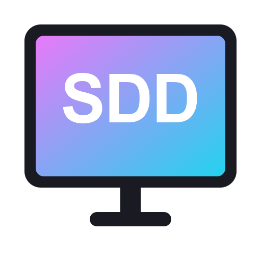
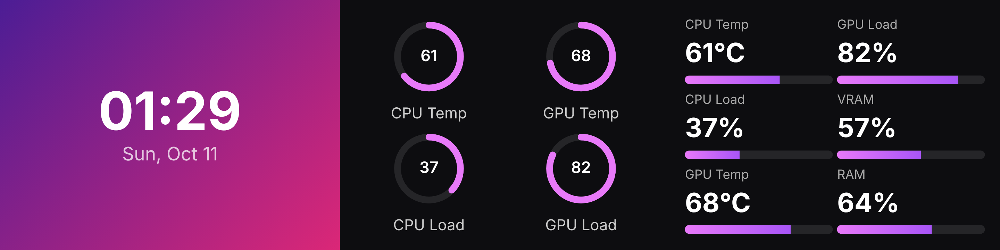
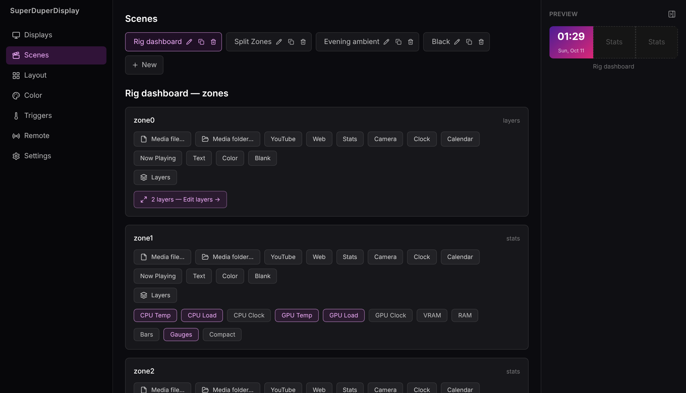
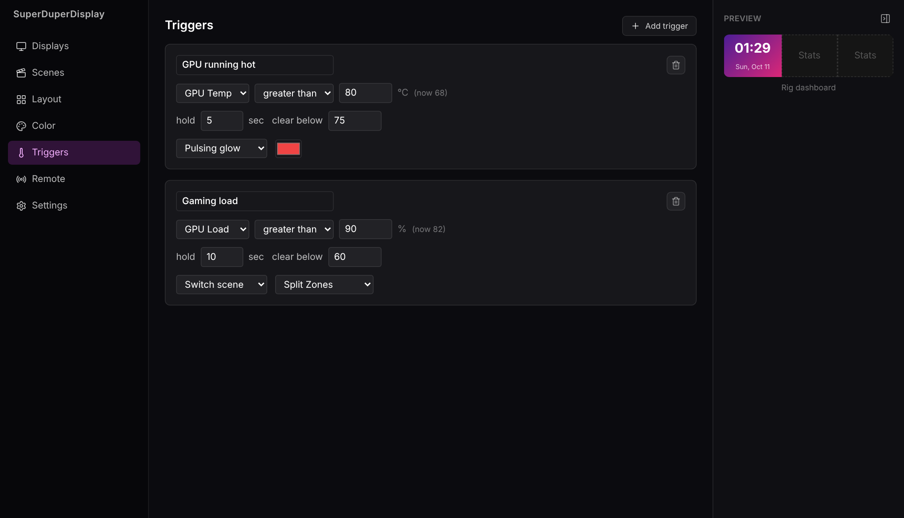
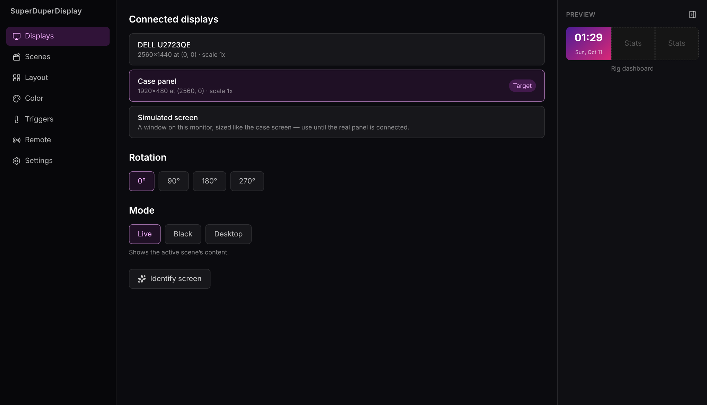
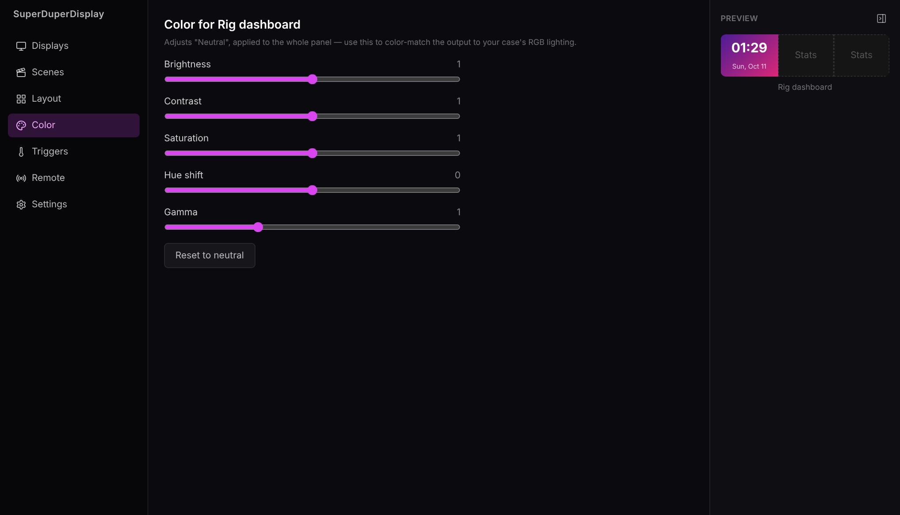

Turn the spare screen in your PC case into a live dashboard: hardware stats, clocks, media, YouTube, cameras and more.
Download the beta for WindowsFree public beta · formerly MiniDisplay

CPU and GPU temperature, load, clocks, VRAM and RAM as bars, gauges or a compact readout.
Local videos, images and folder playlists, YouTube embeds and any web dashboard.
A live clock, your .ics calendar agenda, and whatever is playing in any app.
USB webcams or RTSP cameras, right on the panel.
Stack, place and scale anything freely, OBS Scenes style, with opacity and filters.
Glow, flash or switch scenes when the GPU runs hot, and change scenes by time of day.
Scan a QR code to switch scenes from your phone over your local network.
Lives in the tray, has global hotkeys, and blanks the panel when you lock or sleep.




superduperdisplay-…-setup.exe from the
releases page and run
it. The beta installer isn't code-signed yet, so if SmartScreen warns you, choose
More info → Run anyway.